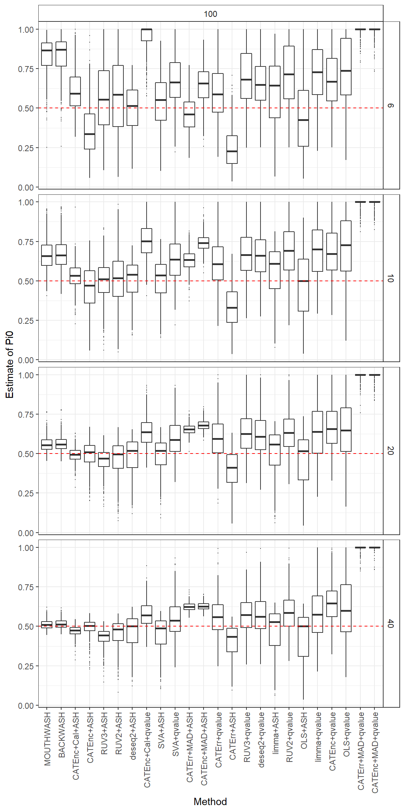
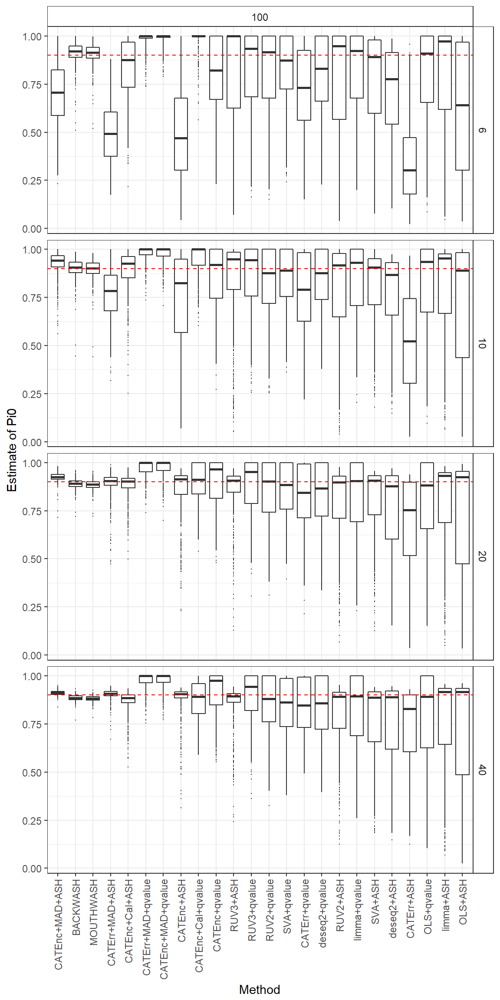
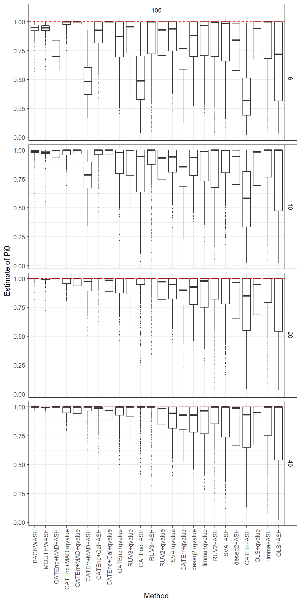
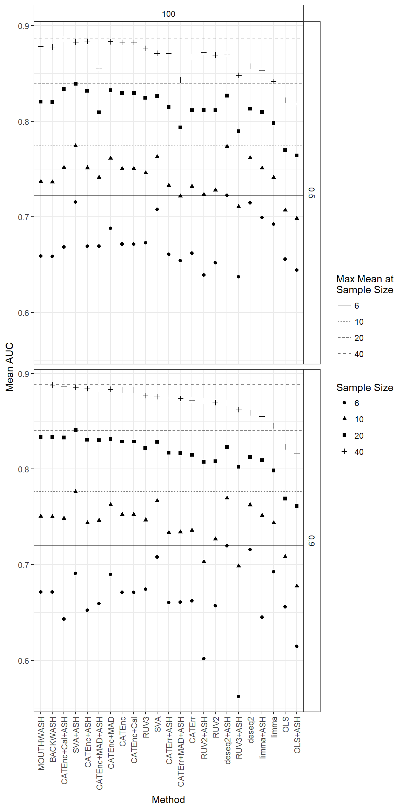

Here, I analyze the square root sims. I ran the simulations here.
replace_names <- function(x) {
x <- stringr::str_replace(x, "pi0_", "")
x <- stringr::str_replace(x, "auc_", "")
x <- stringr::str_replace(x, "mse_", "")
x <- stringr::str_replace(x, "ash_mouthwash", "MOUTHWASH")
x <- stringr::str_replace(x, "ash_backwash", "BACKWASH")
x <- stringr::str_replace(x, "ash_(.+)", "\\1+ASH")
x <- stringr::str_replace(x, "qvalue_(.+)", "\\1+qvalue")
x <- stringr::str_replace(x, "ruv", "RUV")
x <- stringr::str_replace(x, "caterr_cal", "CATErr+MAD")
x <- stringr::str_replace(x, "cate_nccal", "CATEnc+Cal")
x <- stringr::str_replace(x, "caterr", "CATErr")
x <- stringr::str_replace(x, "cate", "CATEnc")
x <- stringr::str_replace(x, "_madcal", "+MAD")
x <- stringr::str_replace(x, "pvalue_", "")
x <- stringr::str_replace(x, "ols", "OLS")
x <- stringr::str_replace(x, "sva", "SVA")
x <- stringr::str_replace(x, "_norm", "")
}
## pi0 first ------------------------------------------------------------
library(tidyverse)## Loading tidyverse: ggplot2
## Loading tidyverse: tibble
## Loading tidyverse: tidyr
## Loading tidyverse: readr
## Loading tidyverse: purrr
## Loading tidyverse: dplyr## Conflicts with tidy packages ----------------------------------------------## filter(): dplyr, stats
## lag(): dplyr, statsdat <- as_data_frame(readRDS(file = "../output/square_root_sims_out.RDS"))
longdat <- select(dat, nullpi, Nsamp, ncontrols, contains("pi0")) %>%
gather(key = "Method", value = "pi0hat", pi0_ash_ols:pi0_qvalue_caterr_cal)
longdat$Method <- replace_names(longdat$Method)
for (nullpi_current in c(0.5, 0.9, 1)) {
sublongdat <- filter(longdat, nullpi == nullpi_current)
mse_dat <- sublongdat %>% filter(Nsamp == 40, ncontrols == 100) %>%
group_by(Method) %>%
summarize(mse = sum((pi0hat - nullpi_current) ^ 2))
factor_levels <- mse_dat$Method[order(mse_dat$mse, decreasing = FALSE)]
sublongdat$Method <- factor(sublongdat$Method, levels = factor_levels)
pl <- ggplot(data = sublongdat, mapping = aes(y = pi0hat, x = Method)) +
facet_grid(Nsamp ~ ncontrols) +
geom_boxplot(outlier.size = 0.1) +
geom_hline(yintercept = nullpi_current, lty = 2, col = "red") +
theme_bw() +
theme(strip.background = element_rect(fill = "white"),
axis.text.x = element_text(angle = 90, hjust = 1, vjust = 0.5)) +
ylab("Estimate of Pi0")
pdf(file = paste0("../output/sqfigures/pi0_box_", nullpi_current * 100, ".pdf"), colormodel = "cmyk",
family = "Times", width = 6.5, height = 7)
print(pl) ## Save
dev.off()
print(pl)
}
Now AUC
## Now AUC --------------------------------------------------------------
dat <- as_data_frame(readRDS(file = "../output/square_root_sims_out.RDS"))
longdat <- select(dat, nullpi, Nsamp, ncontrols, contains("auc")) %>%
gather(key = "Method", value = "auc", auc_ash_ols:auc_pvalue_caterr) %>%
filter(nullpi != 1)
meddat <- longdat %>% group_by(nullpi, Nsamp, ncontrols, Method) %>%
summarize(mean = mean(auc)) %>%
ungroup()
meddat$Method <- replace_names(meddat$Method)
## Get ordering
subsamp <- filter(meddat, Nsamp == 40, nullpi == 0.9, ncontrols == 100)
falevels <- subsamp$Method[order(subsamp$mean, decreasing = TRUE)]
meddat$Method <- factor(meddat$Method, levels = falevels)
meddat$Nsamp <- as.factor(meddat$Nsamp)
maxdat <- meddat %>%
group_by(nullpi, Nsamp, ncontrols) %>%
summarize(max = max(mean)) %>%
ungroup()
pl <- ggplot(data = meddat, mapping = aes(x = Method, y = mean, pch = as.factor(Nsamp))) +
facet_grid(nullpi ~ ncontrols) +
theme_bw() +
theme(strip.background = element_rect(fill = "white"),
axis.text.x = element_text(angle = 90, hjust = 1, vjust = 0.5)) +
geom_point() +
geom_hline(data = maxdat, mapping = aes(yintercept = max, lty = Nsamp), alpha = 1/2) +
scale_linetype_discrete(name = "Max Mean at\nSample Size") +
scale_shape_discrete(name = "Sample Size") +
ylab("Mean AUC")
pdf(file = "../output/sqfigures/sqauc.pdf", colormodel = "cmyk",
family = "Times", width = 6.5, height = 7)
print(pl)
dev.off()## png
## 2print(pl)
sqdat <- readRDS("../output/square_root_sims_out.RDS")sessionInfo()## R version 3.4.0 (2017-04-21)
## Platform: x86_64-w64-mingw32/x64 (64-bit)
## Running under: Windows 10 x64 (build 15063)
##
## Matrix products: default
##
## locale:
## [1] LC_COLLATE=English_United States.1252
## [2] LC_CTYPE=English_United States.1252
## [3] LC_MONETARY=English_United States.1252
## [4] LC_NUMERIC=C
## [5] LC_TIME=English_United States.1252
##
## attached base packages:
## [1] stats graphics grDevices utils datasets methods base
##
## other attached packages:
## [1] dplyr_0.5.0 purrr_0.2.2 readr_1.1.0 tidyr_0.6.1
## [5] tibble_1.3.0 ggplot2_2.2.1 tidyverse_1.1.1
##
## loaded via a namespace (and not attached):
## [1] Rcpp_0.12.13 cellranger_1.1.0 compiler_3.4.0 plyr_1.8.4
## [5] forcats_0.2.0 tools_3.4.0 digest_0.6.12 lubridate_1.6.0
## [9] jsonlite_1.4 evaluate_0.10 nlme_3.1-131 gtable_0.2.0
## [13] lattice_0.20-35 psych_1.7.3.21 DBI_0.6-1 yaml_2.1.14
## [17] parallel_3.4.0 haven_1.0.0 xml2_1.1.1 stringr_1.2.0
## [21] httr_1.2.1 knitr_1.16 hms_0.3 rprojroot_1.2
## [25] grid_3.4.0 R6_2.2.0 readxl_1.0.0 foreign_0.8-67
## [29] rmarkdown_1.6 modelr_0.1.0 reshape2_1.4.2 magrittr_1.5
## [33] backports_1.1.1 scales_0.4.1 htmltools_0.3.6 rvest_0.3.2
## [37] assertthat_0.2.0 mnormt_1.5-5 colorspace_1.3-2 labeling_0.3
## [41] stringi_1.1.5 lazyeval_0.2.0 munsell_0.4.3 broom_0.4.2This R Markdown site was created with workflowr